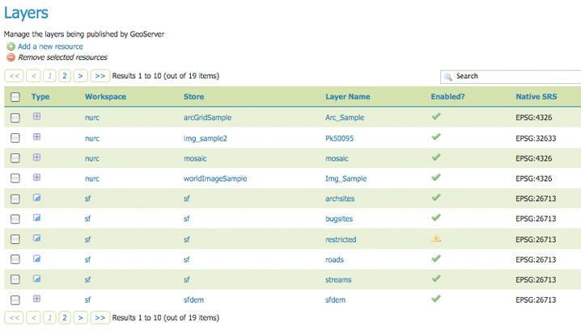
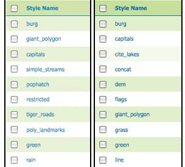

Data¶
이번 섹션은 Web Administration Interface 섹션 가운데에서도 가장 내용이 많고, 아마도 가장 중요한 섹션입니다. 각 서브섹션은 추가(add), 편집(edit), 삭제(delete) 기능을 가진 데이터형 페이지로 바로 연결됩니다.
다음 예제처럼, 데이터 보기 페이지는 색인이 달린 데이터 표를 표출하고 있습니다.

Layers 페이지
데이터형을 알파벳순으로 정렬하려면 그 열(column)의 머리부(header)를 클릭하십시오.

왼쪽은 정렬 안 된 열, 오른쪽은 정렬된 열
간단한 데이터형 검색을 하려면, 검색 상자에 검색 기준(search criteria)을 입력한 다음 Enter 키를 누르십시오. GeoServer가 입력된 검색어에 관련된 데이터형을 검색해서 Search Results 페이지를 반환할 것입니다.

검색어 “top”에 대한 검색 결과 페이지
다음 서브섹션에서 다양한 데이터형을 추가·편집·삭제하는 데 대한 자세한 내용을 설명합니다.
이전: Layer Preview
다음: Workspaces